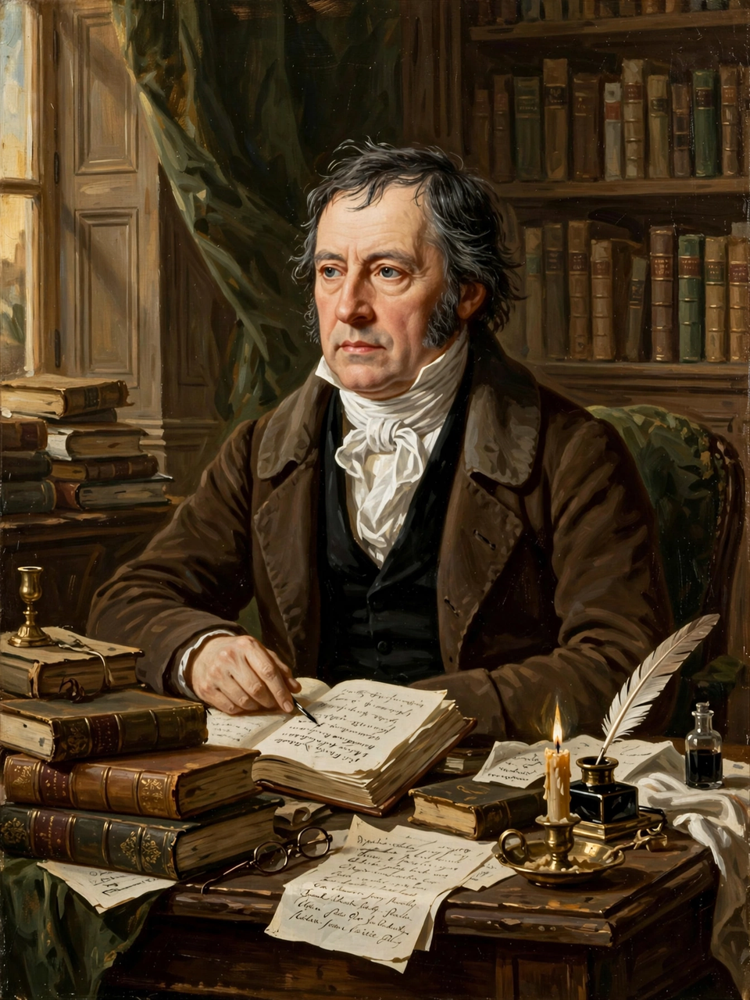

| Georg Wilhelm Friedrich Hegel | |
| Born | 27 August 1770, Stuttgart, Duchy of Württemberg |
|---|---|
| Died | 14 November 1831 (aged 61), Berlin, Prussia |
| Education | Tübinger Stift, University of Tübingen |
| Era | 19th-century philosophy |
| School | German idealism; Absolute idealism |
| Notable works | The Phenomenology of Spirit (1807); Science of Logic; Elements of the Philosophy of Right |
| Notable ideas | Dialectic; Absolute Spirit (Geist); master–slave dialectic; end of history |
Georg Wilhelm Friedrich Hegel (27 August 1770 – 14 November 1831) was a German philosopher and the most systematic figure of German idealism. His comprehensive system of philosophy — encompassing logic, nature, mind, history, art, religion, and the state — profoundly influenced subsequent thought, including Marxism, existentialism, pragmatism, and analytic philosophy's early critics.
Hegel studied theology at Tübingen, where he roomed with the poet Friedrich Hölderlin and the young philosopher Schelling, before working as a private tutor in Bern and Frankfurt. He habilitated at Jena, where he completed his first masterpiece, The Phenomenology of Spirit (1807) — famously finishing it as Napoleon's army occupied the city. After posts at a Nuremberg gymnasium and at Heidelberg, he took the chair of philosophy at Berlin in 1818, becoming the dominant intellectual figure in Prussia until his sudden death in 1831, probably of cholera.
Hegel's method is the dialectic: concepts, social forms, and historical epochs develop through internal contradictions that are overcome (aufgehoben — cancelled and preserved at once) in higher unities. The Phenomenology traces consciousness from sense-certainty through self-consciousness — including the famous lordship-and-bondage (master–slave) passage — to absolute knowing. His later system unfolds in the Science of Logic, the philosophy of nature, and the philosophy of spirit, culminating in art, religion, and philosophy as modes of Absolute Spirit. In the Philosophy of Right (1820) he presented the rational state as the actualization of freedom, arguing that the family, civil society, and the state form an ethical whole (Sittlichkeit).
After his death his followers split into Right and Left (Young) Hegelians; Karl Marx inverted the dialectic into historical materialism. Hegel's ideas echo through Kierkegaard, British idealism, American pragmatism, Kojève's reading of the end of history, and debates in critical theory and the theory of the public sphere.